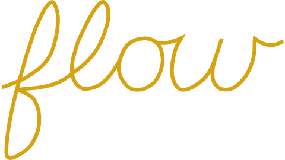

Version 1.5.1
Copyright 2011-2013 by Peter Eastman
The English spelling dictionaries were created with SCOWL 7.1, which is Copyright 2000-2011 by Kevin Atkinson.
The French, German, Portuguese, and Spanish spelling dictionaries are based on the Android Open Source Project.